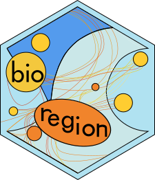
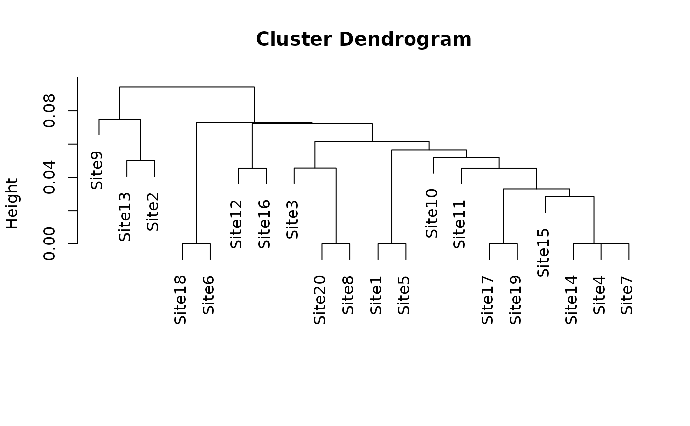

Iterative hierarchical consensus tree from a dissimilarity matrix
Source:R/ihct.R
ihct.RdThis function builds a hierarchical tree of sites from a matrix of pairwise dissimilarities, using the Iterative Hierarchical Consensus Tree (IHCT) algorithm. Unlike an ordinary hierarchical clustering, the tree does not depend on the order in which the sites happen to be stored in the matrix.
Most users should use hclu_hierarclust() and not this function.
ihct() is an algorithm used in hclu_hierarclust(), exported for
users who want the algorithm itself for their purposes.
Usage
ihct(
dist_mat,
method = "average",
n_runs = 100,
top_n_trees = 2,
variation_drop = 0.2,
sites_drop = 10,
height_rule = c("least_squares", "max_child"),
tie_block_resolution = TRUE,
n_workers = 1,
size_parallel = 200,
verbose = TRUE
)Arguments
- dist_mat
A square
matrixof dissimilarities between sites, with the site names as row and column names. Adistobject is also accepted and converted.- method
The name of the linkage method, as in hclust. It is used both to build the randomized trees and to give every division of the final tree its height. Should be one of
"ward.D","ward.D2","single","complete","average"(= UPGMA, the default),"mcquitty"(= WPGMA),"median"(= WPGMC) or"centroid"(= UPGMC). Two of the optimization parameters described in details are only available with some of these.- n_runs
The number of randomized trees built to decide one division (
100by default). More trees make each division more stable and the whole tree slower to obtain.- top_n_trees
An
integerindicating how many of the randomized trees, ranked by how well they fit the dissimilarities, decide a division (2by default). With1the division is read straight off the best tree; with more, sites are grouped according to how often they end up on the same side across those trees. See details.- variation_drop
A
numericvalue between 0 and 1 (0.2by default). This is a speed optimization parameter: it lets a group of sites reuse the randomized trees of the group it was split from instead of building its own, which is faster and costs a very small amount of fit. Its rule is based on variation: fresh trees are built once a group has lost this share of the variation it still held when its current trees were built. Set it to0to build fresh trees at every division, or to1to switch this rule off and leavesites_dropin charge. Only used withmethod = "average". See Details.- sites_drop
A
numericvalue of 0 or more (10by default). This is the second speed optimization parameter, working alongsidevariation_drop, with a rule based on sites rather than on variation: fresh trees are also built once a group has lost this many sites since its current trees were built. Set it to0or1to build fresh trees at every division, or toInfto switch this rule off and leavevariation_dropin charge. Only used withmethod = "average"andvariation_drop > 0. See Details.- height_rule
A
characterstring indicating how the heights of the tree are corrected when a division comes out lower than a division it contains. With"least_squares"(default) the heights are moved as little as possible, which fits the dissimilarities better; with"max_child"every division is raised to the highest division it contains, as in bioregion 1.4.0 and earlier. See Details.- tie_block_resolution
A
boolean(TRUEby default) deciding what happens to a group of sites whose dissimilarities are all equal, where the randomization has nothing left to choose between. WithTRUEsuch a group is resolved directly at that value, which saves itsn_runstrees and costs nothing in fit; withFALSEit is divided from randomized trees like any other group. Only used withmethodset to"single","complete","average"or"mcquitty". See Details.- n_workers
An
integerof 1 or more indicating how many processes of your computer build the randomized trees at the same time. With1(default) they are built one after another. Higher values are worth it on large matrices only, and they do not change the tree: the same seed gives the same result whatever this is set to. See Details.- size_parallel
An
integerof 2 or more indicating the smallest group of sites whose randomized trees are worth handing out to the worker processes (200by default). Groups smaller than this are always done in one process, because sending them out costs more than it saves. Only used whenn_workers > 1.- verbose
A
booleanindicating whether to display progress and information messages. Set toFALSEto suppress them.
Value
An hclust object, whose method element is set to
"Iterative Hierarchical Consensus Tree". Its heights are monotone (no
division is lower than a division it contains) and its labels are the site
names of dist_mat, in alphabetical order. It can be plotted, cut with
cut_tree() or cutree, and used anywhere an hclust
object is expected.
Details
— 1. The problem: the order of the sites changes the tree —
A dissimilarity matrix computed from species composition contains a great many identical values, because many pairs of sites share exactly the same number of species. Hierarchical clustering has to break those ties somehow, and hclust breaks them by taking whichever pair comes first in the matrix. Shuffle the rows of the matrix and you get a different tree out of the very same data (Dapporto et al., 2013). IHCT removes that arbitrariness by generating a true consensus tree from many randomizations.
— 2. The tree is built from the top down —
IHCT does not join sites into ever larger groups, the way ordinary hierarchical clustering does. It starts with a single group containing every site, cuts that group in two, then cuts each of the two in two, and carries on until every group holds a single site. Each of those cuts is called a division, and the whole algorithm is about deciding one division well. Divisions are always strictly binary (i.e., one branch is always cut into two branches).
— 3. How one division is decided —
Take a group of sites that has to be divided. Four things happen to it:
Its sites are put in a random order and a tree is built on them, with hclust and the linkage of
method. This is repeatedn_runstimes, givingn_runstrees that differ only in how the ties were broken.Each of those trees is scored by its cophenetic correlation coefficient, that is, by how closely the distances read off the tree reproduce the dissimilarities the tree was built from. The
top_n_treesbest-scoring trees are kept and the rest are discarded.From the kept trees, we take the top division to decide how to split the group of sites into two. With
top_n_trees = 1we take the top division of the best tree. With more, we take a consensus division based on how often sites are on the same side across the kept trees. The rule we used is that the consensus is based on the majority decision, sites are grouped together if theyr are together in > 50% of trees.The division is given a height, computed from the dissimilarities between the two groups it separates in the way
methodprescribes: their mean for"average"(UPGMA), their smallest value for"single", their largest for"complete", and so on.
For each of the two groups that come out of the division, the algorithm run them through the same four steps, and so on for their own halves, until we reach single sites.
This why the algorithm is called "iterative": it randomizes trees again at every division from top to bottom. It is why this method provides better performance compareds to other approaches: a tie broken one way at the top of the tree does not force the same choice at the divisions underneath it.
Since the randomization uses R's random number generator, call
set.seed() before ihct() if you want the same tree twice.
— 4. Computaion time and how to shorten it —
Step 1 above is where nearly all of the computing time goes: n_runs trees
are built at every single division. However, the trees usually peel a handful of
sites off the rest at each division rather than splitting the data in half.
This means randomizing everything at every division can be inefficient, resulting
in large computation times, making the function too long to use on large datasets.
To make the function usable on large datasets, we provide two optimization parameters. These parameters make the algorithm reuse previously randomized trees at new division, unless a threshold of change is reached:
variation_dropis based on the amount of variation from the dissimilarity matrix. It triggers a new tree randomization only when the amount of variation in the group being divided has reached a threshold since last randomization (default: 20% drop in variation). In other words, new randomizations happen only when tree divisions reach a certain threshold of variation since the last randomization. For example, when a tree peels off only 1 site at a time, this argument makes sure no new randomization trigger unless variability reaches the desired threshold.sites_dropis based on how many sites the group has lost. It triggers new randomizations only when a certain number of sites have been excluded since the last randomization.
These two parameters with their defaults (variation_drop = 0.2,
sites_drop = 10) result in marginal
changes in algorithm performance (loss in CCC <0.001) and make the tree
1.5 faster to build. In our tests, the larger the datasets, the higher
the savings with these two optimization parameters. Note, however,
that reusing trees only works with UPGMA currently, so it only applies to
method = "average".
The two arguments work as a pair, and each of them can be set so that the other no longer has any effect. A new randomization is made as soon as either of them asks for one, so whichever of the two asks more often is the one that decides:
sites_drop = 1(or0) means new randomizations every time a site is treated (so randomizations at every division, andvariation_dropis never used).variation_drop = 0likewise means new randomizations at every division, andsites_dropis then never used.variation_drop = 1never triggers new randomizations, leavingsites_dropto decide on its own, andsites_drop = Infnever triggers randomizations, leavingvariation_dropto decide on its own.Both switched off (
variation_drop = 1andsites_drop = Inf) randomizes once, at the first division, and reuses those trees for the whole tree. This is the fastest setting and the one that fits the data least well.
— 5. Groups where all distances are equal —
Some groups have all their dissimilarities equal to one single value: every
pair of sites inside the group is exactly as different as every other pair.
These are tied blocks, and they are common in presence-absence data, where
indices such as Simpson saturate at 1 as soon as two sites share no species.
A tied block means randomization brings nothing useful
and the n_runs trees are wasted computation time.
To avoid this, the argument tie_block_resolution = TRUE (the default)
recognises such a group and
resolves it directly, peeling its sites off one at a time with every
division sitting at the common value. Setting it to FALSE divides tied
blocks from randomized trees
like any other group (pre-1.4.0 behaviour).
— 6. Node heights —
The height of nodes in a tree must be monotonous, i.e. a child node cannot be have a higher height than its parents. However, this situation can happen when building the tree, which is why all tree construction algorithms have a monotonicity section where node height is recalculated.
IHCT corrects the
heights once the whole tree is built, with a method that depends on
height_rule:
"max_child" raises every division to the highest division inside it. It is
simple, and it is what bioregion 1.4.0 and earlier did, but a single high
division buried deep inside a group drags all of its parents up with it,
well above the dissimilarities those divisions actually summarize. We
found out it provides lower quality (lower cophenetic correlation
coefficient) than "least_squares", so we changed the default after 1.4.0.
"least_squares" (the default) instead moves the heights as little as it
can: among all sets of heights with no branch doubling back, it takes the
one that stays closest to the heights the divisions were given, weighting
each division by the number of site pairs it stands for. With
method = "average" these are provably the heights that fit the
dissimilarities best on the tree shape at hand, so the cophenetic
correlation is never below what "max_child" gives and is usually a little
above it.
— 7. Computation time and parallelization —
Most of the waiting is spent building the randomized trees, and the runs of
one group do not depend on each other, so ihct_n_workers can share them
between several processes of your computer. This only pays on large
matrices, where a single run is slow enough to be worth sending to another
process: groups of fewer than 200 sites are always done in one process, and
small datasets should be left at ihct_n_workers = 1. We found that
4 workers give good gains (about three times faster on a 5,000-site
matrix); beyond that the processes spend their time waiting for memory
rather than computing, and on a 10,000-site matrix going from 4 workers
to 8 provided only limited gains while doubling the memory needed.
Each worker also needs its own copy of the
dissimilarity matrix on Windows, about 200 MB for 5,000 sites and 800 MB
for 10,000, so ask for fewer workers than your memory allows copies.
Whatever you set, the tree is the same: the random shuffles are always drawn
in the same order by the main process, and only the building of the trees is
handed out to workers.
— 8. Reproducing the trees of bioregion 1.4.0 —
For the same seed, the following settings give the tree that bioregion 1.4.0 and earlier produced:
ihct(dist_mat,
method = "average",
n_runs = 100,
top_n_trees = 2,
variation_drop = 0,
height_rule = "max_child",
tie_block_resolution = FALSE)sites_drop may be left at any value here, since variation_drop = 0
already rebuilds the trees at every division.
References
Dapporto L, Ramazzotti M, Fattorini S, Talavera G, Vila R & Dennis RLH (2013) Recluster: an unbiased clustering procedure for beta-diversity turnover. Ecography 36, 1070–1075.
Dapporto L, Ciolli G, Dennis RLH, Fox R & Shreeve TG (2015) A new procedure for extrapolating turnover regionalization at mid-small spatial scales, tested on British butterflies. Methods in Ecology and Evolution 6, 1287–1297.
Kreft H & Jetz W (2010) A framework for delineating biogeographical regions based on species distributions. Journal of Biogeography 37, 2029–2053.
See also
For more details illustrated with a practical example, see the vignette: https://biorgeo.github.io/bioregion/articles/a4_1_hierarchical_clustering.html.
Associated functions: hclu_hierarclust cut_tree
Author
Boris Leroy (leroy.boris@gmail.com)
Pierre Denelle (pierre.denelle@gmail.com)
Maxime Lenormand (maxime.lenormand@inrae.fr)
Examples
comat <- matrix(sample(0:1000, size = 500, replace = TRUE, prob = 1/1:1001),
20, 25)
rownames(comat) <- paste0("Site",1:20)
colnames(comat) <- paste0("Species",1:25)
dissim <- dissimilarity(comat, metric = "Simpson")
dist_mat <- net_to_mat(dissim[, 1:3],
weight = TRUE,
squared = TRUE,
symmetrical = TRUE)
set.seed(1)
tree <- ihct(dist_mat,
n_runs = 20,
verbose = FALSE)
plot(tree)

cut_tree(tree, n_clust = 3)
#> Determining the cut height to reach 3 groups...
#> --> 0.07421875
#> ID K_3
#> Site1 Site1 1
#> Site10 Site10 1
#> Site11 Site11 1
#> Site12 Site12 1
#> Site13 Site13 2
#> Site14 Site14 1
#> Site15 Site15 1
#> Site16 Site16 1
#> Site17 Site17 1
#> Site18 Site18 1
#> Site19 Site19 1
#> Site2 Site2 2
#> Site20 Site20 1
#> Site3 Site3 1
#> Site4 Site4 1
#> Site5 Site5 1
#> Site6 Site6 1
#> Site7 Site7 1
#> Site8 Site8 1
#> Site9 Site9 3
# Fastest setting: build the randomized trees once, at the first division,
# and reuse them all the way down
set.seed(1)
fast_tree <- ihct(dist_mat,
n_runs = 20,
variation_drop = 1,
sites_drop = Inf,
verbose = FALSE)